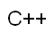
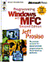

Книги по С/С++

Формат файла: Текст DOS
Язык: Русский
Язык: Русский

213k

Формат файла: CHM
Язык: Английский
Язык: Английский
5.2Mb

Формат файла: djvu
Язык: Русский
Язык: Русский
9.7Mb
Книги >>> Книги по С/С++
Книги по С/С++ |
||
| Язык программирования С++ | ||
|
 |
Книга является каноническим изложением возможностей
С++, написанным автором этого популярнейшего языка программирования.
В этой книге вы найдете
множество доказавшых свою эффективность подходов к решению разнообразных
задач программирования
и проектирования.
Формат файла: Текст DOS
Язык: Русский |
213k |
| Programming Windows with MFC. | ||
 |
Очень интересная книга по программированию на
Microsfot Visual C++, с использованием MFC.
Формат файла: CHM
Язык: Английский |
5.2Mb |
| Visual C++ и MFC / Программирование для Windows NT и Windows 95 | ||
|
|
"Visual C++ и MFC / Программирование для Windows NT и Windows 95"
Хоть и старенькая примерно 98 года но неплохая. Содержит по словам авторов исчерпывающую информацию по MFC.
Формат файла: djvu
Язык: Русский |
9.7Mb |